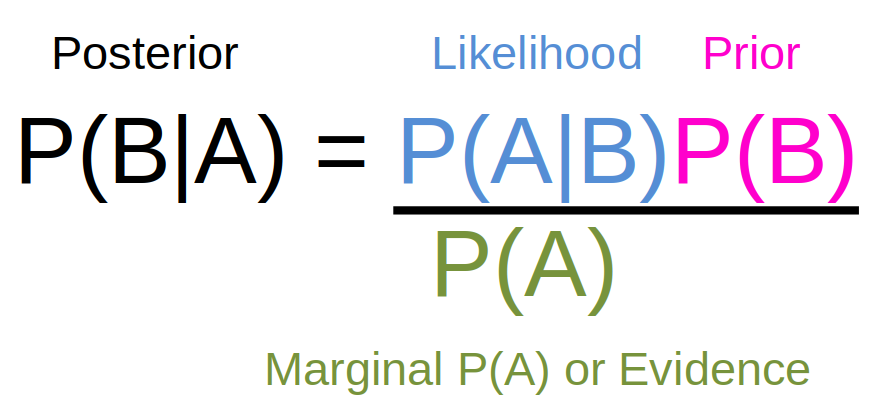

This is the first of a series of posts going over the basics of Bayesian inference. Bayesian inference uses Bayes rule which comes from simple algebra of basic probability rules. In this post we’ll look at the basic rules of probability and derive Bayes rule. We’ll look at a couple of simple examples to see how Bayes rule works.
Note
There’s a little bit of R code in this post and I’m using the new native R pipe |>. If you’re used to tidyverse semantics you might think that |> behaves like the magrittr pipe, %>% but it doesn’t! But it can (mostly) be used in the same way. See here for more details.
On the way to Bayes rule
The grade classifications for a course I taught in my previous job are shown in the table below. The course was taken by students across two programmes.
Table 1: Grade classification by programme.
Programme
Grade
SES
SS
1
10
3
2.1
20
6
2.2
11
15
3
4
20
Tables like this are called contingency tables and they are used to summarise the relationship between two (or more) categorical variables. We can create contingency tables in R.
# dimnames is a list; rownames then colnames; |> is native R pipe; pipe matrix to as.table funcgrade_table <-matrix(c(10,20,11,4,3,6,15,20), ncol =2, byrow =FALSE, dimnames =list(c("1", "2.1", "2.2", "3"), c("SES", "SS"))) |>as.table()grade_table
SES SS
1 10 3
2.1 20 6
2.2 11 15
3 4 20
We can use contingency tables to calculate different types of probabilities.
Marginal probabilities
The row and column totals for each variable in the table are called the marginal totals.
Table 2. Grade classifications with marginal totals
Programme
Grade
SES
SS
Marginal Total
1
10
3
13
2.1
20
6
26
2.2
11
15
26
3
4
20
24
Marginal Total
45
44
89
We can get R to add marginal totals to contingency tables for us.
SES SS Sum
1 10 3 13
2.1 20 6 26
2.2 11 15 26
3 4 20 24
Sum 45 44 89
The marginal totals can be used to calculate marginal probabilities by dividing the marginal total for a row or column by the grand total. We denote marginal probabilities as \(P(A)\) where \(A\) is some outcome.
For example the marginal probability of students getting a 2.1 is the marginal number of students who got a 2.1 (26) divided by the total number of students in the course (89).
Table 3. Numbers involved in marginal probabilities are coloured.
Programme
Grade
SES
SS
Marginal Total
1
10
3
13
2.1
20
6
26
2.2
11
15
26
3
4
20
24
Marginal Total
45
44
89
We see that \(P(2.1)\) is 29%.
Joint probabilties
The probability of two (or more) outcomes considered together is called a joint probability.
For events \(A\) and \(B\) joint probabilities are often written as \(P(A \text{ } and \text{ } B)\) or \(P(A, \text{ } B)\).
To calculate joint probability we divide the number of outcomes that fulfill a specific criteria by the grand total.
Here an example might be:
\[
P(2.1 \text{ and } SES)
\]
We can calculate this probability from the total number of SES students who got a 2.1 classification (20) divided by the total number of students (89).
SES SS Sum
1 0.112 0.034 0.146
2.1 0.225 0.067 0.292
2.2 0.124 0.169 0.292
3 0.045 0.225 0.270
Sum 0.506 0.494 1.000
Note
Key to both marginal and joint probability is that we use the grand total as the denominator to calculate these probabilities.
Conditional probabilities
Conditional probability is the probability of an event or outcome occurring given some other event or outcome has already occurred or is in place.
We denote conditional probabilities as \(P(outcome | condition)\).
We can read this as “The probability that outcome occurs given condition is in place”.
We might ask “What’s the probability of a 2.1 mark given the student is in the SES programme?” We’d denote that as:
\[
P(2.1|SES)
\]
Table 5. When we calculate conditional probabilities we restrict ourselves to one row or column (here coloured) of a contingency table.
Programme
Grade
SES
SS
Marginal Total
1
10
3
13
2.1
20
6
26
2.2
11
15
26
3
4
20
24
Marginal Total
45
44
89
If we look in the SES column we see 20 students got a 2.1 classification. There were a total of 45 SES students so \(P(2.1|SES)\) is 20/45 or 0.444 or 44.4%.
The general formula for conditional probability is:
\[
P(A|B) = \frac{P(A\text{ and }B)}{P(B)}
\]
Let’s see this at work for \(P(2.1 | SES)\).
The joint probability - \(P(2.1 \text{ and } SES)\) - is 20/89 = 0.225.
The marginal probability of SES - \(P(SES)\) - is 45/89 = 0.506.
The conditional probability of 2.1 given SES (\(P(2.1 | SES)\)) is therefore 0.225/0.506 = 0.444; exactly the same as before.
Importantly\(P(A|B) \neq P(B|A)\).
Examining our contingency table we saw that \(P(2.1|SES)\) was 0.444.
However this is not the same as \(P(SES|2.1) = \frac{P(2.1 \text{ and } SES)}{P(2.1)}\) = [(20/89) / (26/89)] = 0.77.
Note
Key to conditional probability calculations using a contingency table is that we are restricting ourselves to one row or column of the table.
The General Multiplication rule
We can rearrange the equation for conditional probability to get the General Multiplication Rule for calculating the joint probability of A and B.
\[
P(A \text{ and } B) = P(A|B)P(B)
\]
This is useful if we are not given the joint probability for some outcome.
Maybe we only know that 50.6% of students on the module are on the SES programme and that if a student was on the SES programme the probability of a 2.1. was 44.4%.
We can use this information to work back to the joint probability, \(P(2.1 \text{ and } SES\)) using the formula above.
\(P(2.1 \text{ and } SES) = P(2.1|SES)P(SES))\) = 0.444 * 0.506 = 0.225 - i.e. 22.5% as before.
Bayes rule
Figure 1. (Probably not) Thomas Bayes 1701-1761
Thomas Bayes was a Presbyterian minister & philosopher. Although this portrait is universally used to portray Bayes it is probably not his portrait. The probability rule we call Bayes rule was published after Bayes’ death by his friend Richard Price in ‘An Essay towards solving a Problem in the Doctrine of Chances’ in 1763.
We are often given conditional probabilities like \(P(2.1 | SES)\) and we actually want the inverse conditional probability, \(P(SES|2.1)\). As we noted above these are not the same probabilities!
Bayes rule allows us to invert conditional probabilities.
We know from above that:
\(P(A \text{ and } B) = P(A|B)P(B)\)
\(P(B \text{ and } A) = P(B|A)P(A)\)
We also know that the order of \(A\) and \(B\) in joint probability doesn’t matter:
\(P(A \text{ and } B) = P(B \text{ and } A)\)
This means that:
\[
P(B|A)P(A) = P(A|B)P(B)
\]
If we divide through by \(P(A)\) we get:
\[
P(B|A) = \frac{P(A|B)P(B)}{P(A)}
\]
This is exactly Bayes rule!
If we know \(P(A|B)\) and the marginal probabilities, \(P(A)\) and \(P(B)\) we can get to \(P(B|A)\) by applying Bayes rule.
Suppose we know that \(P(2.1|SES)\) is 0.444 and we know the marginal probabilities of \(P(2.1)\) (0.29) and \(P(SES)\) (0.506).
Using Bayes rule we can easily calculate the inverse conditional probability \(P(SES|2.1)\):
In the numerator \(P(A|B)\) is the likelihood and \(P(B)\) is the prior. The denominator, \(P(A)\) is the marginal probability of A and is also called the evidence. The left hand probability, \(P(B|A)\) is called the posterior.

Figure 2. The components of Bayes rule.
Being able to go from \(P(A|B)\) to \(P(B|A\)) might seem trivial but it turns out to be really useful.
Simple Application of Bayes rule
A classic application of Bayes rule is calculating the probability of actually having a disease after a positive test for that disease knowing only:
The test result
The disease prevalence rate i.e. the probability of getting the disease
The true positive rate of the test (sensitivity) i.e. the probability the test is positive if you have the disease
The true negative rate of the test (specificity) i.e. the probability the test is negative if you do not have the disease
While I was writing this the COVID-19 prevalence (by positive test) for my age group where I live was 8.8% (\(P(COVID)\) = 0.088). It was also the beginning of winter so the flu season was starting up.
Suppose I start feeling unwell and decide to take a lateral flow test to see if I have COVID-19 as opposed to flu (or hopefully just a cold). Lateral flow device true positive rate (\(P(+ve|COVID)\)) seems to be pretty good but the true negative rate (\(P(-ve|no \text{ } COVID)\)) seems to be much more variable e.g. Mistry et al. (2021). Let’s say the test I use has a true positive rate of 99% and a true negative rate of 85%.
If I take the test and get a positive result there is a 99% probability the test is correct if I have COVID-19 i.e. \(P(+ve|COVID) = 0.99\)… but this is not what I want to know. If I already knew I had COVID why bother with a test 🤡
What I actually want to know is \(P(COVID|+ve)\) i.e. the probability I actually have COVID given the test is positive.
So given current prevalence and information about the accuracy of the test there is an approximately 39% chance I actually have COVID after a positive lateral flow test.
We could write a little function to calculate this in R.
Using this with the figures above for COVID testing gives us:
prob_pos <-bayes_calc(0.99, 0.85, 0.088)prob_pos
[1] 0.3890675
Exactly the same result we got from our manual calculation.
Conclusion
Bayes rule is a conditional probability and is derived from simple algebra of established probability rules. Bayes rule allows us to invert conditional probabilities. This in turn can help us address questions like “What’s the probability I have the disease if the test is positive?” rather than simply knowing the probability the test result is right if I have the disease. Questions like the former are often what we really need answers to!
Bayes rule may seem pretty trivial but it is in fact extremely useful. In the examples above the probabilities we used were point probabilities i.e. single numbers but Bayes rule can be used with full probability distributions as well. In the next few posts we’ll explore how using Bayes rule with probability distributions can help us calculate the probability of hypotheses and models as well as estimate effect sizes in statistical analysis. This is where Bayes rule is really useful!
References
Mistry, Dylan A., Jenny Y. Wang, Mika-Erik Moeser, Thomas Starkey, and Lennard Y. W. Lee. 2021. “A Systematic Review of the Sensitivity and Specificity of Lateral Flow Devices in the Detection of SARS-CoV-2.”BMC Infectious Diseases 21 (1): 828. https://doi.org/10.1186/s12879-021-06528-3.